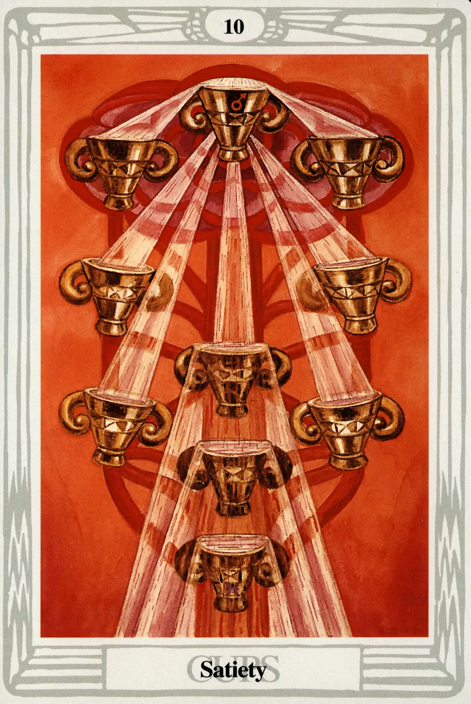

Cups
Ten of Cups
Atiety

(Mars in Pisces)
20° to 30° Pisces
March 11 to March 20
Original Title: Lord of Perfected Happiness.
Golden Dawn Model: A hand appears from clouds at the bottom of the card, holding the stem of lotus or water lilies whose flowers pour water into all the cups, which al spill over. The top cup is held sideways by another hand, and pours water into the left-hand upper cup. A single lotus flower rises above the top cup, and is the source of the water that fills it.
Queen Scale for Malkuth: Citrine; Olive; Russet; and Black.
The Four Scales for Mars: Scarlet; Red; Venetian Red; Bright Red, rayed azure or emerald.
The Four Scales for Pisces: Crimson (ultra Violet); Buff, flecked silver White; Light Translucent pinkish Brown; Stone color.
Formula: 10 (Malkuth) of Cups (Briah) + Mars in Pisces = SATIETY
Crowley advised Harris on the composition of this card, writing:
The background; it ought to look menacing. There is something very sinister about this card. It suggests the morbid hunger which springs from surfeit. The craving of a drug addict is the idea. At the same time, of course, it is this final agony of descent into illusion which renders necessary the completion of the circle by awakening the Eld of the All-Father.
—Crowley to Harris, December 19, 1939.
Had enough? The Ten of Cups could have been filled with the realization of the potential of the suit of Cups. Instead, it is just filled with the concept of fullness. The cups have runneth over and are staining the carpet. Crowley blames this on Mars in Pisces:
Mars is the gross, violent and disruptive force which inevitably attacks every supposed perfection. His energy displays the greatest possible contrast with that of Pisces, which is both peaceful and spiritualized.
This is the end of the line for the suit of water. Harris ignores the Golden Dawn model and coloring guidelines and creates a Tree of Life from ten rather disturbed and tipsy cups.